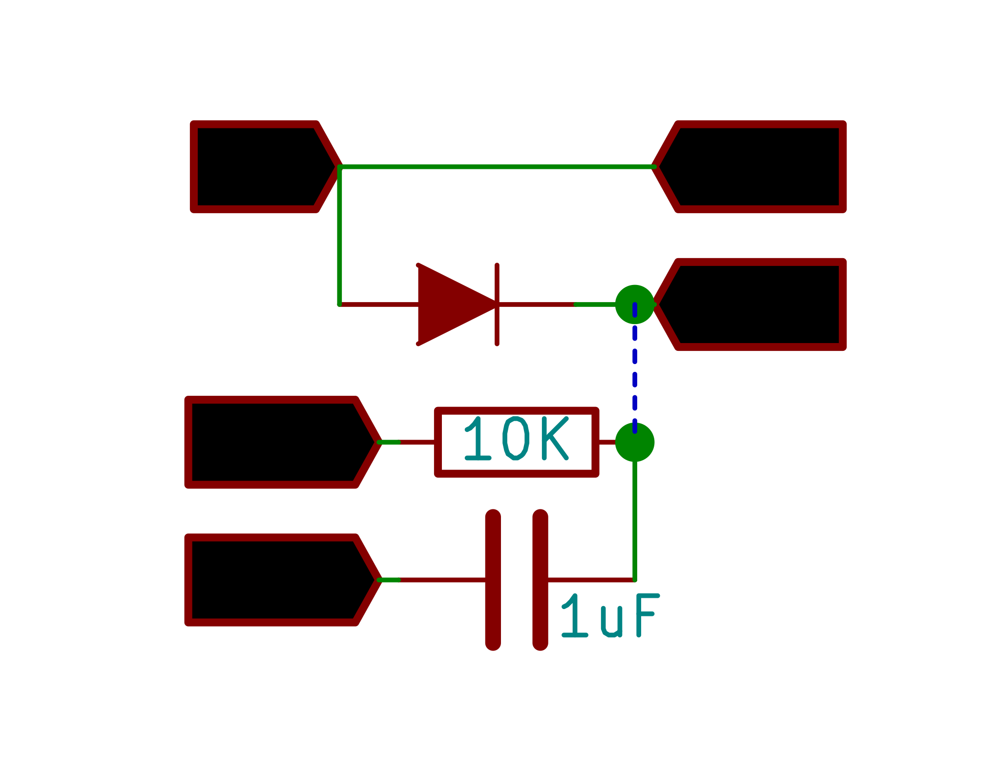

Half-Wave Rectifier
Study a halfwave rectifier using a sine wave generator
Half wave rectifiers clip out the negative part of the input waveform. The rectified signal can be further filtered with a capacitor in order to obtain a low ripple DC voltage.
Only a diode is needed to clip out the negative part of the input signal.

Make the Connections as shown in the figure.
CH1 monitors the original waveform output from W1.
CH2 monitors the rectified waveform .
Connect a load resistor to remove noise from the output.
to observe the effect of filtering, connect a capacitor to GND.
Connect various capacitors to study how their values affect the output signal.